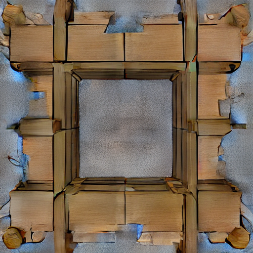

Low-VRAM runner
CLIP stays on CPU. GPT runs on the GPU, gets unloaded, then the shape decoder runs. That was enough to fit real runs on this laptop.
CubeLite Studio runs Cube 3D locally, logs VRAM and timing, renders OBJ files from a few angles, and puts the files into a folder that is easier to test in Roblox Studio. It does not include model weights. It is not an official Roblox tool.
The goal was simple: make local Cube 3D runs less painful to test and compare.
CLIP stays on CPU. GPT runs on the GPU, gets unloaded, then the shape decoder runs. That was enough to fit real runs on this laptop.
Every run saves the prompt, profile, time, peak VRAM, triangle count, file size, logs, and any error.
Each mesh gets front, side, back, top, and 3/4 renders. One nice angle is not enough.
The export folder includes OBJ files, a UV-mapped textured OBJ, MTL, PNG atlas, metadata, render plate, and quick import notes. Textures can come from the fast procedural provider or the optional Diffusers provider.
One laptop, real runs, no broad claim.
| Run | Profile | Peak VRAM | Triangles after cleanup | Notes |
|---|---|---|---|---|
| Official-style baseline | High memory path | ~5.98GB, OOM | n/a | Did not finish on the 6GB GPU. |
| Treasure chest candidate | 6GB Quality, seed 202 | 4.16GB | 14,000 | Best chest so far. Still needs a Roblox Studio import pass. |
| Wooden crate candidate | 6GB Quality, seed 404 | 4.16GB | 12,000 | Cleaner than the first crate run. |
| Low-VRAM baseline | Low VRAM | 3.93GB | varies | Good for testing the runner. Output quality varies. |
These are not finished Roblox assets. They are the best outputs I have locally right now.

Readable blocky prop. Better than the earlier chest, but the side view still needs cleanup.

The cleanest simple prop so far. Box shape is solid and the panel grooves read from several views.

Generated locally with the Diffusers provider using Stable Diffusion 1.5. The benchmark records model id, size, time, contrast, and variance.

The shape is recognizable, but it needs scale checks and surface cleanup before I would call it done.

Some angles work, some do not. I kept it because it shows why the multi-angle render matters.
The app works in dry-run mode without Cube 3D weights. Real generation needs the official Cube 3D repo and model files.
python -m venv .venv
.venv\Scripts\activate
pip install -r requirements.txt
python run_app.pypython run_benchmark.py --dry-runGood for checking the UI, reports, mesh analysis, and export folders before setting up Cube 3D.
python run_quality_search.py ^
--prompt "low poly wooden crate game prop" ^
--profile "6GB Quality" ^
--seeds 303 404Exports now include textured.obj, textured.mtl, albedo.png, and finish_report.json.
python run_texture_benchmark.py ^
--providers procedural diffusers ^
--model-id stable-diffusion-v1-5/stable-diffusion-v1-5 ^
--size 128 ^
--steps 2The Diffusers provider is optional. It downloads the selected model locally and records timing plus texture stats.